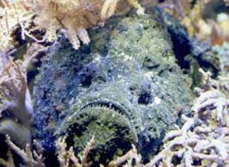

Es el actinopterigio más venenoso, y el contacto directo con las espinas de sus aletas, que contienen un potente veneno neurotóxico, puede ser mortal para los seres humanos. Cuando se camufla se asemeja a una roca (de ahí su sobrenombre), lo que los hace pasar desapercibidos y pueden ser pisados de forma accidental.
Sus púas se localizan en la aleta dorsal (12-13), anal (3) y pélvica (2), cada una de ellas con dos glándulas venenosas. El veneno es tan potente como el de la cobra, tiene citotoxinas y neurotoxinas
Cada glándula segrega hasta diez miligramos de un veneno muy similar al de las cobras, tan potente como para matar a una persona en un par de horas entre atroces sufrimientos: una sola espina produce un dolor tan agónico y lacerante, que algunos picados enloquecen y muerden a quienes intentan ayudarlos.
El dolor se irradia por todo el miembro y alcanza su máximo a la hora. Se acompaña de dolor de cabeza, vómitos, espasmos intestinales, hipertensión arterial, en ocasiones con arritmias cardíacas, parálisis musculares, convulsiones, coma, parada cardiorrespiratoria y si no es atendida puede causar la muerte. Si sobrevive el paciente, la curación de la herida es lenta, con abscesificación de la misma. También posee una segunda línea de defensa, los tubérculos, que son unas glándulas que además de ayudar a mimetizar al pez segregan una toxina fulminante.
Tamaño
En cuanto al tamaño, se encuentran peces con unos 35 centímetros de largo, aunque se ha llegado a encontrar algunos con hasta 60 centímetros.